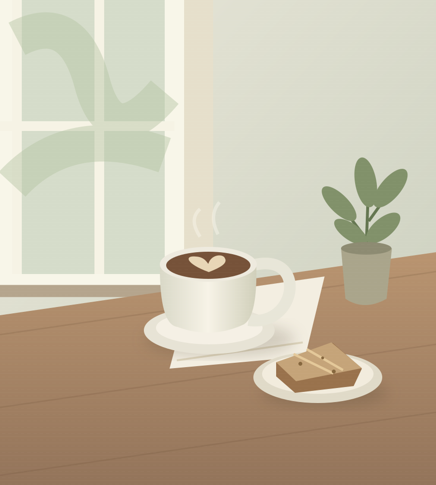

飲みもの
- 余白ブレンドやわらかな苦み、ナッツの余韻。
- ¥550
- カフェラテミルクの甘さをゆっくりと。
- ¥650
- 季節のハーブティーレモングラスとカモミール。
- ¥600

a little room for yourself.01 / OUR STORY
慌ただしい毎日の中で、少しだけ立ち止まる。
余白は、そんな時間のためのカフェです。
香りを楽しむコーヒー。季節を感じるひと皿。
本を読んだり、窓の外を眺めたり。
思い思いの過ごし方で、おくつろぎください。
お店の奥には、ひとりのための小さなサロンも。
カフェだけでも、サロンだけでも。
あなたのペースでお越しください。
03 / PRIVATE SALON
完全予約制・おひとりずつカフェの奥の静かな個室で、
ゆったりとしたフェイシャルケアを。
ご来店からお帰りまで、あなただけの時間です。
税込・カウンセリング時間を含みます。架空の施術メニューです。
サロンのご利用には事前予約が必要です。
カフェのご利用・お食事の注文は必須ではありません。
04 / GOOD TO KNOW
カフェは予約不要です。サロンのみ完全予約制という設定です。なお、こちらは架空の店舗のデモサイトのため、実際のご来店・ご予約はできません。
はい。サロンのみの利用もできる店舗を想定しています。カフェでの注文は必須ではありません。
実際の店舗サイトでは、お問い合わせ先や原材料の案内を設置する想定です。このデモでは食事の提供やお問い合わせの受付は行っていません。
05 / VISIT US
店舗案内（架空の設定）
この場所は、
デザインの中にあります。